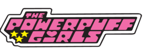
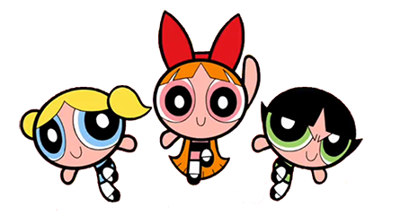

The Powerpuff Girls tv show revolves around the adventures of Blossom,
Bubbles and Butttercup. The girls were created by Professor Utonium in
an attempt "to create the perfect little girls" using a mixture of
sugar, space and everything nice. However, he accidentally spilled a
mysterious substance called "chemical X" into the mixture giving all
three superpowers that they use to defend their ton from villains such
as giant monsters.
Blossom
is the self-proclaimed leader of the Powerpuff Girls. Her personality
ingredient is "everything nice", her signature color is pink, and she has long
red hair with a red bow. She was named for having spoken freely and honestly
to the Professor shortly after her creation. Her unique power is freezing
objects with her breath.
Bubbles
is the cute sensitive one. Her personality ingredient is sugar, her
signature color is blue, and she has short blonde hair in two pigtails.
Bubbles is seen as kind and very sweet, but she is also capable of extreme
rage and can fight monsters just as well as her sisters can. Her unique power
is emitting supersonic waves with her voice.
Buttercup
is the toughest of the three. Her personality ingredient is spice, her
signature color is green, and she has short black hair in a flip. She is a
tomboy, who loves to get dirty, fights hard and plays rough. Blossom is the
only Powerpuff Girl without a unique super power.
{kind=link}
{kind=link}
{kind=link}
{kind=link}